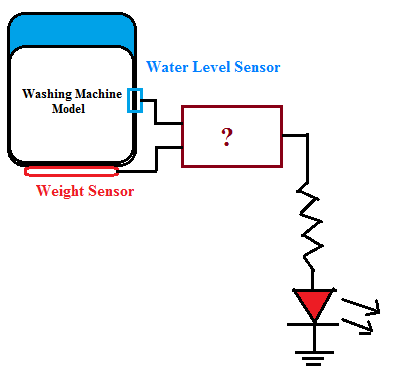

Q1.In this experiment, if the alarm is to be activated only when the temperature and pressure exceed their maximum limits at the same time which of the following gate would you choose for this application?
A
AND
B
OR
C
NOR
D
NAND
Ans is A
Q2. Under what condition would a two input OR gate allow a logic signal to pass through to its output unchanged?
A
When one of the inputs is HIGH.
B
When both the inputs are HIGH
C
When both the inputs are LOW.
D
When one of the inputs is LOW
Ans is D
Q3. Are the two statements below concerning an OR gate always true? (i) If the output waveform from an OR gate is the same as the waveform at one of its inputs, the other input is being held permanently LOW. (ii) If the output waveform from an OR gate is always HIGH, one of its inputs is being held permanently HIGH.
A
Yes
B
No
C
Not predictable
D
None of these
Ans is A
Q4. When the weight is overloaded (logic 1 o/p of weight sensor) or the water level is low (logic 1 o/p of level sensor) or both conditions are true, which gate should be used to indicate alarming condition? 
A
AND
B
OR
C
NOT
D
XOR
Ans is B
Q5 Complete each expression: (i) A + 1 = __________ (ii) A + 0 = __________ (iii) A + A’ = _______ (iv) A+ A = _________
A
A,1,A,1
B
1,A,1,A
C
A,0,A,A
D
1,A,0,A
Ans is B